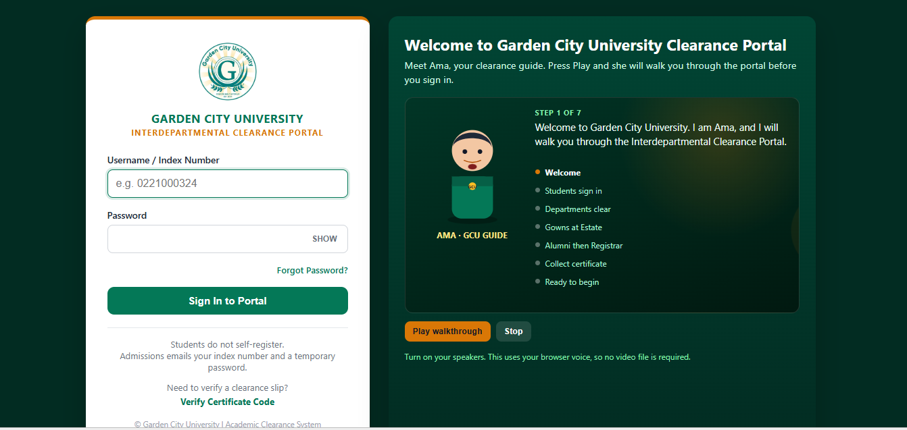
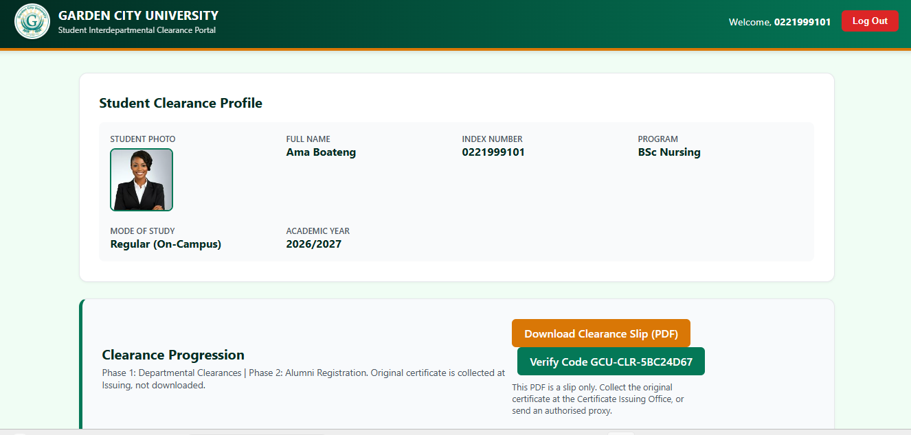

Python & Django
Backend logic, views, models and web application development.
FINAL-YEAR IT STUDENT · GHANA
I'm Andyford Osei Boateng, an aspiring software developer interested in backend development, web applications and secure software engineering.
⌖ Kumasi, Ghana · Expected graduation: May 2027
01 / ABOUT
I'm a final-year BSc Information Technology student at Garden City University in Ghana. I enjoy turning ideas into working applications and learning how interfaces, databases, access control and testing fit together.
My main academic project is a multi-departmental digital student clearance portal intended to improve a paper-based university process. It has strengthened my interest in Django development, backend systems and application security.
I also founded Suave Solutions Ghana, which has helped me build practical skills in communication, responsibility and managing work alongside university.
Connect on LinkedIn ↗02 / TOOLKIT
A growing toolkit built through coursework and hands-on projects.
Backend logic, views, models and web application development.
HTML, CSS and JavaScript for responsive interfaces.
PostgreSQL, MySQL, SQL Server and relational data concepts.
Java, C++, VB.NET and Python through study and projects.
RBAC, server-side authorization and audit logging in a project context.
Learning through debugging, testing, documentation and iteration.
Skill levels grow with practice. Project descriptions distinguish current work from future plans.
03 / SELECTED WORK
Selected work from my learning and development journey.


PROJECT 01 · IN DEVELOPMENT
A web-based system being developed to coordinate university clearance across departments and reduce reliance on paper-based workflows.
Private repository — code available on request.
Currently in development/testing. No live demo; deployment is pending school/supervisor approval.
PROJECT 02 · ACADEMIC / PRACTICE
A Java-based inventory and stock-tracking application designed to help monitor supply levels and improve record accuracy for a small-business environment.
More screenshots and implementation details will be added as documentation improves.
04 / CONTINUOUS LEARNING
I'm strengthening my software development and cybersecurity fundamentals through coursework, certifications and practical projects.
✓ Introduction to Cybersecurity Cisco Networking Academy · 2024
✓ Computer Hardware Basics Cisco Networking Academy · 2025
✓ Cybersecurity ADB Institute · 2026
05 / CONTACT
I'm open to conversations about remote internships, junior developer opportunities, collaboration and learning from experienced teams.
Alternative WhatsApp: +233 20 718 2177 ↗